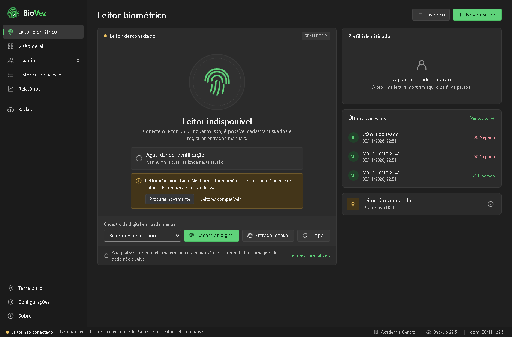

Controle de acesso pela digital, direto no Windows.
O BioVez identifica a pessoa pela impressão digital, confere as regras de entrada e registra cada acesso. Tudo fica no seu computador.
Baixar o BioVez 1.2.0
O que o BioVez faz
Feito para portarias, academias, escritórios e qualquer lugar que controla a entrada de pessoas cadastradas.
Identificação pela digital
A pessoa põe o dedo no leitor e o BioVez encontra o cadastro na hora, entre todas as digitais registradas.
Regras de entrada
Bloqueia cadastro suspenso ou pendente, plano vencido, entrada fora do horário e leitura repetida.
Cadastro completo
Usuários com plano, validade e situação. Cada dedo é lido 3 vezes para um cadastro confiável.
Histórico e relatórios
Todas as entradas e tentativas, horários de pico, entradas por dia e exportação para Excel (CSV).
Backup automático
Cópias do banco de dados na pasta que você escolher, inclusive uma pasta do Google Drive ou do OneDrive.
Privacidade
Nada é enviado à internet. A digital vira um modelo matemático; a imagem do dedo não é guardada.
Requisitos
- Windows 10 ou 11, 64 bits.
- Leitor de digital USB com driver do Windows (WBF), que aparece em Gerenciador de Dispositivos › Dispositivos biométricos.
- Permissão de administrador para instalar. O BioVez abre como administrador porque o Windows exige isso para entregar a imagem da digital.
Sensores de digital de notebook (Windows Hello) normalmente não funcionam: eles comparam a digital dentro do próprio chip e não liberam a imagem.
Como instalar
- Baixe o instalador acima.
- Abra o arquivo e confirme o aviso de administrador. Se aparecer "O Windows protegeu o computador", clique em Mais informações › Executar assim mesmo.
- O instalador copia o programa, cria os atalhos e prepara o que o Windows precisa (WebView2 e Serviço de Biometria).
- Conecte o leitor, abra o BioVez e cadastre os usuários.